ContentDesign
Wonderland
2020 / 2026
2020년에 기획하고 컷 편집으로 만든 〈앨리스〉를 2026년 AI로 다시 제작.
Wonderland2026
AI만으로 제작한 1분 숏 드라마 프롤로그. 장면별 시작 스틸 확정 후 영상 생성, 색 보정과 합성으로 마무리.
- 구분
- 개인 작업
- AI 사용도
- 90%
- 도구
- Gemini (Nano Banana Pro), Seedance 2.5 (Dreamina), Kling
앨리스2020
Wonderland의 원안. 직접 기획한 내용을 컷 편집과 오디오 믹싱으로 구성한 1분 37초 영상.
- 구분
- 개인 작업
- AI 사용도
- 0%
- 도구
- Premiere Pro
해파리에 독은 없지만
2022 / 2026
2022년에 완성한 실사 단편과, 2026년에 일부 컷을 AI로 다시 다듬은 후작업.
AI 후작업2026
완성한 단편의 일부 컷을 AI로 재작업. 타이틀 물속 배경, 물 연출 컷, 화면 확장을 원본과 비교.
- 구분
- 개인 작업
- AI 사용도
- 100%
본편2021 – 2022
16분 29초 실사 단편. 총괄과 편집 담당. 정류장 표지판·하늘·주소판 교체 VFX, 3D 해파리 타이틀 제작.
- 역할
- 총괄, VFX, 편집
- 기여도
- 80%
- 도구
- Premiere Pro, After Effects, Cinema 4D, Octane
3D 해파리2021 – 2022
본편 오프닝에 들어간 해파리를 Cinema 4D로 제작. 촉수는 헤어로 표현. 쉐이딩부터 합성·보정까지 단계 비교.
- 도구
- Cinema 4D


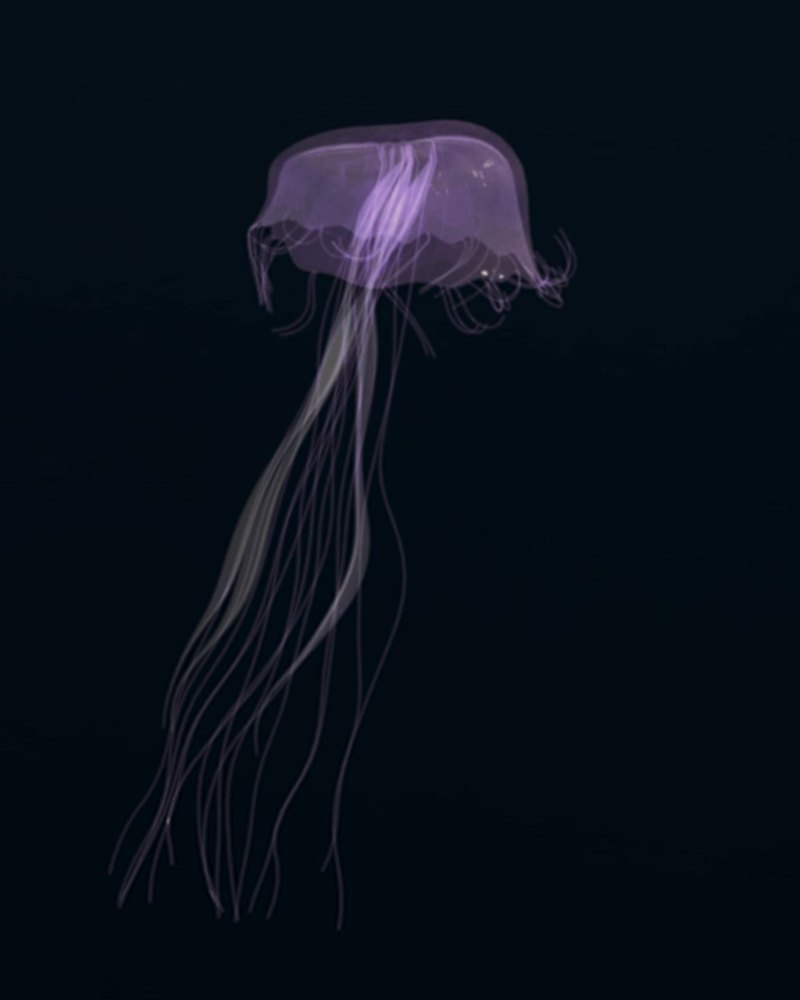
AI 작업
2026
이미지 생성부터 영상화까지 혼자 진행한 AI 작업.
Planet2026
Midjourney 이미지를 3D 모델로 변환. 같은 시작·끝 프레임으로 Kling 3.0과 Seedance 2.0 결과 비교.
- 구분
- 개인 작업
- AI 사용도
- 100%
- 도구
- Midjourney, ComfyUI (Tripo, Kling 3.0, Seedance 2.0)


한옥 침실2026
캐릭터 시트와 장소 시트로 인물과 공간을 고정한 뒤 영상화.
- 구분
- 개인 작업
- AI 사용도
- 100%
- 도구
- Gemini (Nano Banana), Kling, Veo


캠퍼 우주선2026
Midjourney로 만든 장면을 Kling으로 영상화.
- 구분
- 개인 작업
- AI 사용도
- 100%
- 도구
- Midjourney, Kling
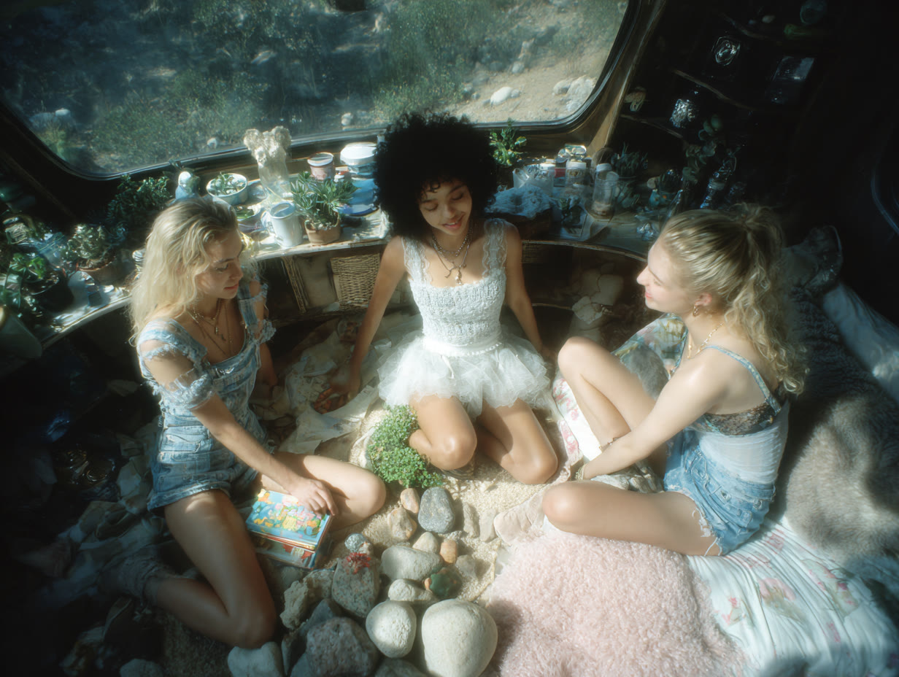
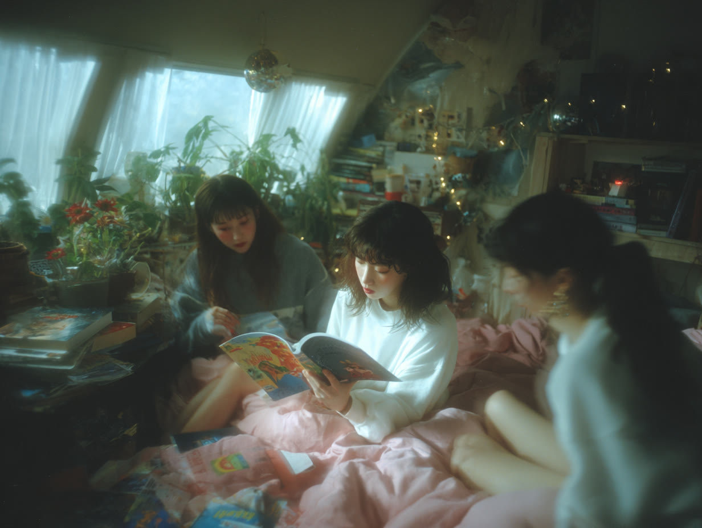
HereWeAre
2024 – 2025
공연 예술 플랫폼 HereWeAre의 영상 다수 편집. 앱 사용법, 공연장 소개, 도시별 숏폼 등 일부 수록.
- 역할
- 영상 편집
- 기여도
- 100%
- 도구
- After Effects, Premiere Pro
27watt
2023
대학 인스타그램 채널의 릴스 다수 편집. 형식이 다른 영상 일부 수록.
- 역할
- 영상 편집
- 기여도
- 편집 100%
- 도구
- Premiere Pro, After Effects
몽디에스
2021 – 2022
유아 화장품 브랜드 몽디에스의 콘텐츠 다수 기획·촬영·편집. 그중 인스타그램 영상 6편 수록.
- 역할
- 기획, 촬영, 편집
- 기여도
- 100%
- 도구
- Premiere Pro, After Effects
지하철 · KBS 신관 전광판
2019 – 2020
지하철 역사, KBS 신관 전광판 송출 광고. 왼쪽은 시안 또는 현장, 오른쪽은 송출 영상.
- 역할
- 영상 편집
- 기여도
- 100%
- 도구
- Premiere Pro
SPACE SCOUTS
2026
NCT WISH 료 생일 카페 웹페이지. 굿즈 목록, 방문객 방명록, 미니게임으로 구성한 모바일 우선 웹앱.
- 구분
- 개인 작업
- AI 사용도
- 90%
- 도구
- React, Vite, Cloudflare Pages · Functions · D1, Playwright


Iridescent Planet
2026
Three.js로 만든 인터랙티브 3D 행성. 설계도 화면과 행성 화면 사이를 전환.
- 구분
- 개인 작업
- AI 사용도
- 90%
- 도구
- Three.js, Vite
- 링크
- GitHub
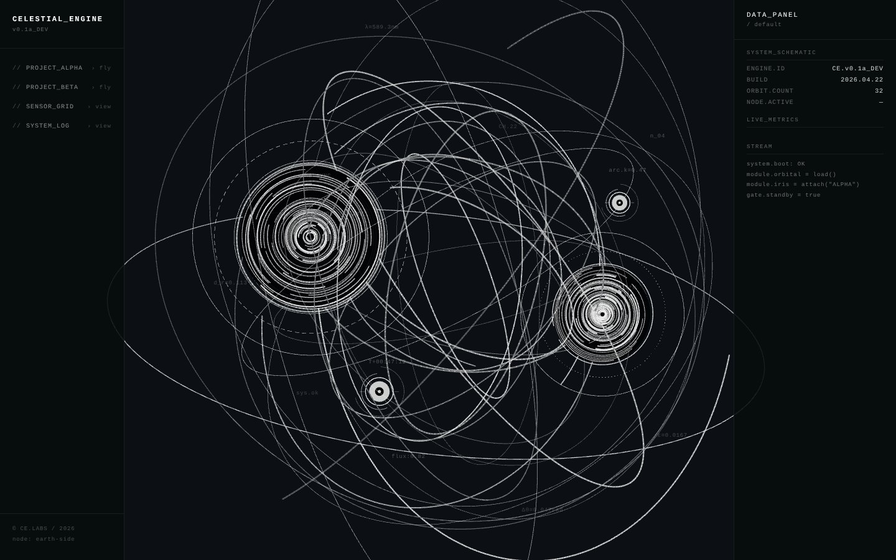
FitMatch
2026
피트니스 센터 수업 예약 플랫폼. 4인 팀 프로젝트.
- 구분
- 팀 프로젝트 (4인)
- 역할
- 인증(JWT · 쿠키 세션), 회원가입 · 로그인 · 프로필 API, 알림(SSE). 프론트엔드와 백엔드 담당
- 도구
- Next.js, TypeScript, Tailwind CSS, Express, Prisma, PostgreSQL
- 링크
- GitHub 프론트엔드 / 백엔드


supershy42
2024 – 2026
실시간 대전 퐁 게임 웹 서비스. 팀 프로젝트.
- 구분
- 팀 프로젝트
- 역할
- 프론트엔드 React 전환, 게임 진행 · 결과 화면, 게임 서버 수정
- 도구
- React, webpack, Django, WebSocket
- 링크
- GitHub 프론트엔드 / 게임 서버
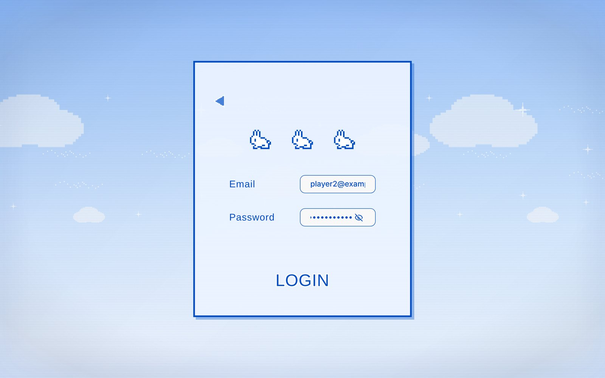
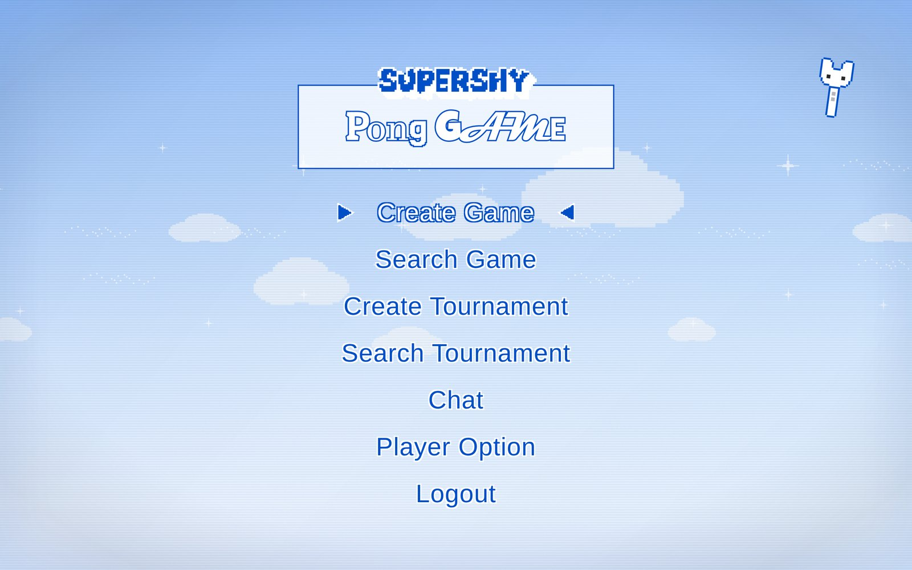
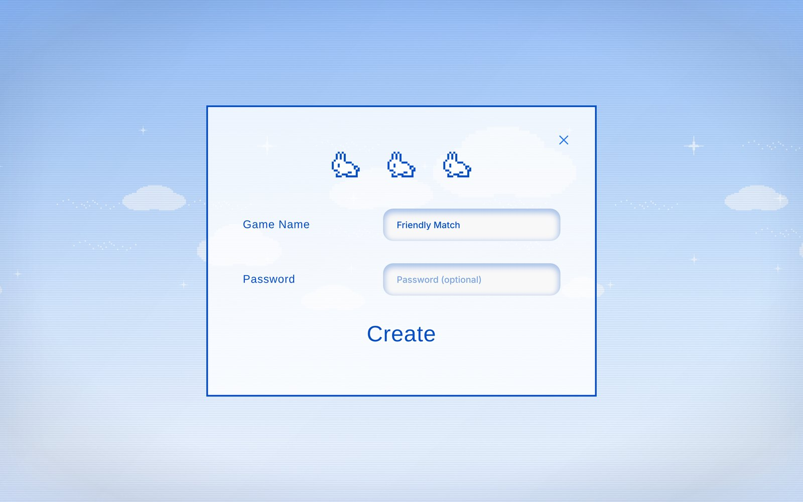
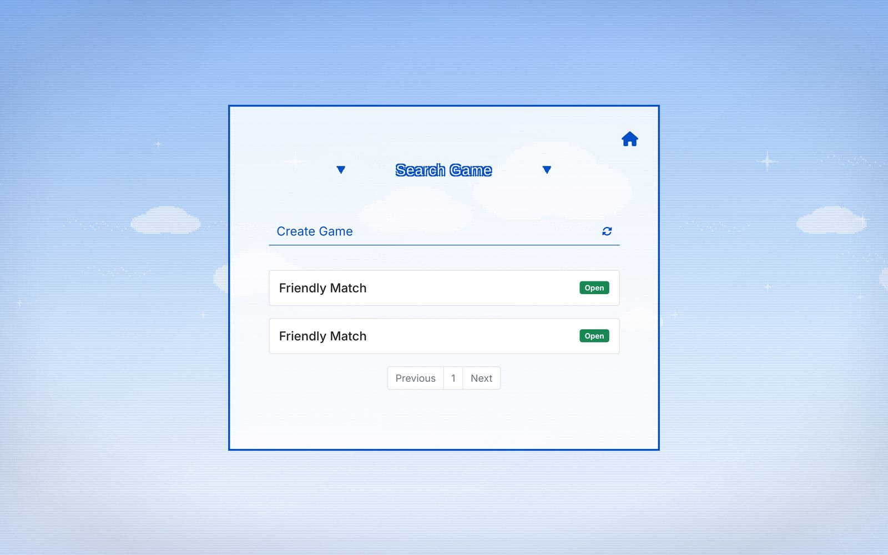
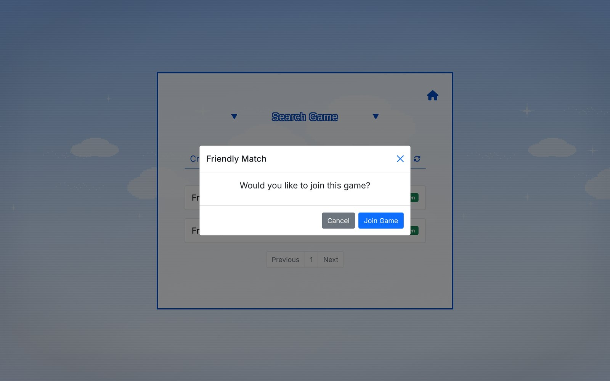
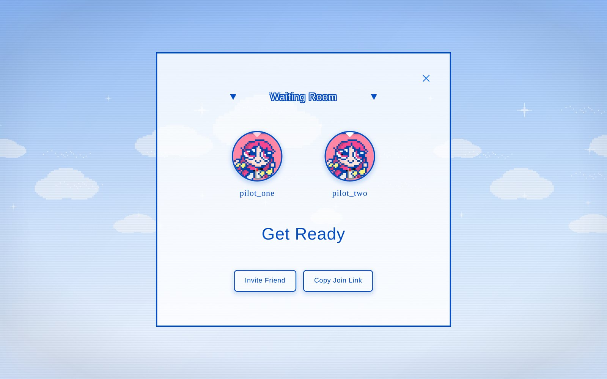


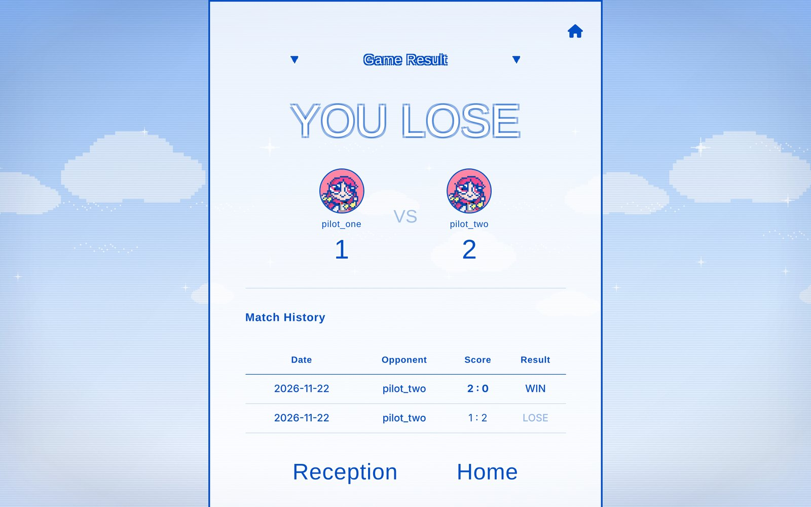
Docthru
2025
기술 문서 번역 챌린지 서비스. 팀 프로젝트.
- 구분
- 팀 프로젝트
- 역할
- 백엔드. 챌린지 · 신청 API, 마감 처리 스케줄러, 회원 조회
- 도구
- Express, Prisma, PostgreSQL, node-cron, Swagger
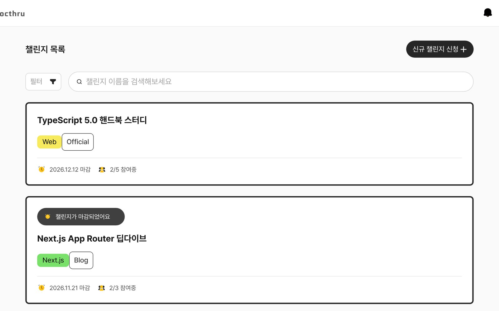
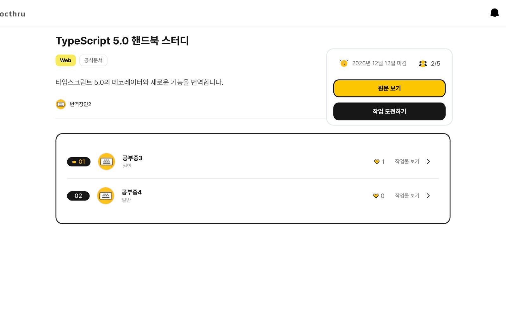


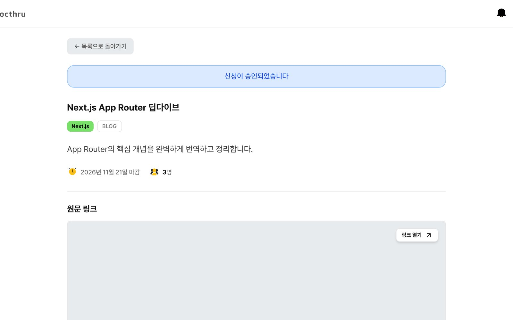
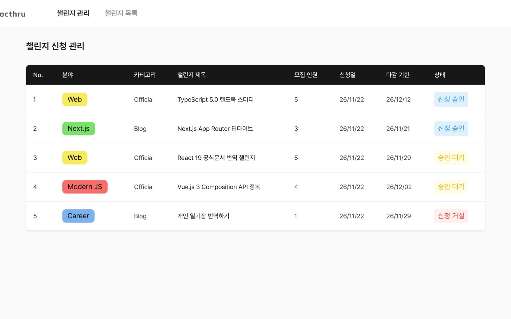
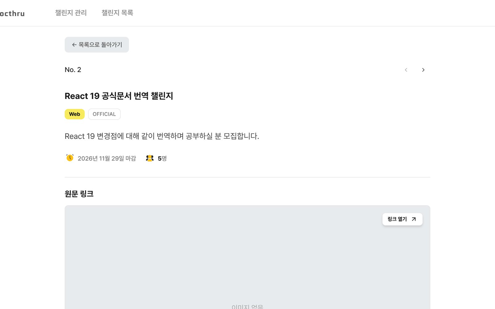